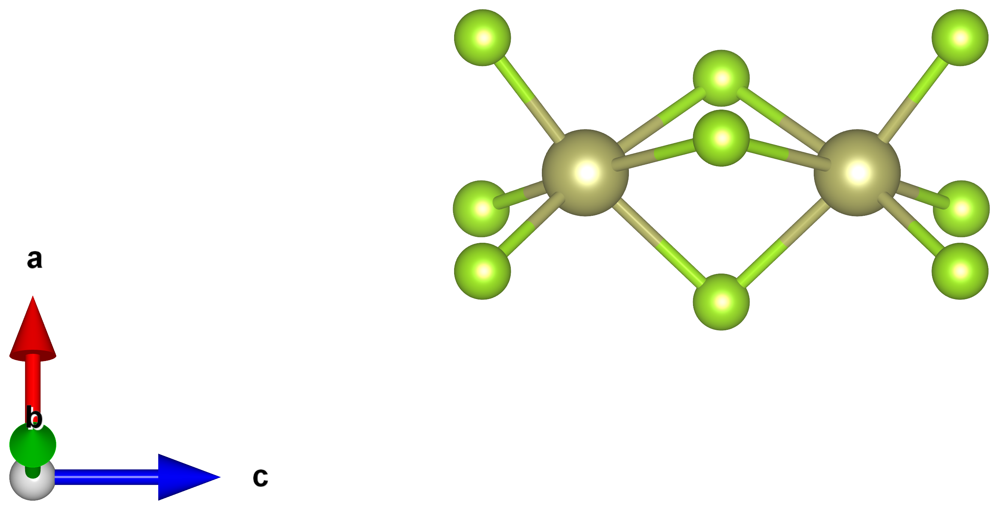
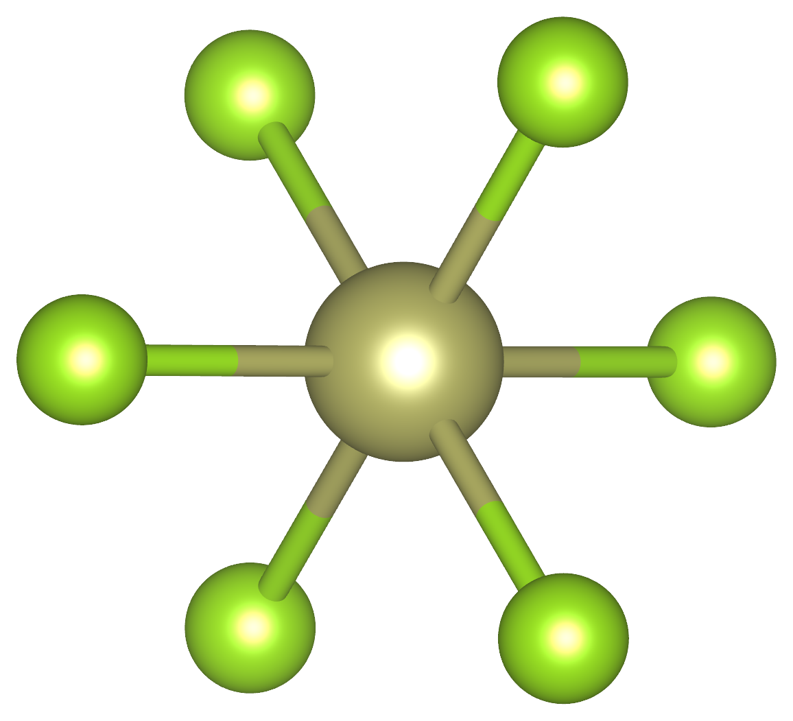
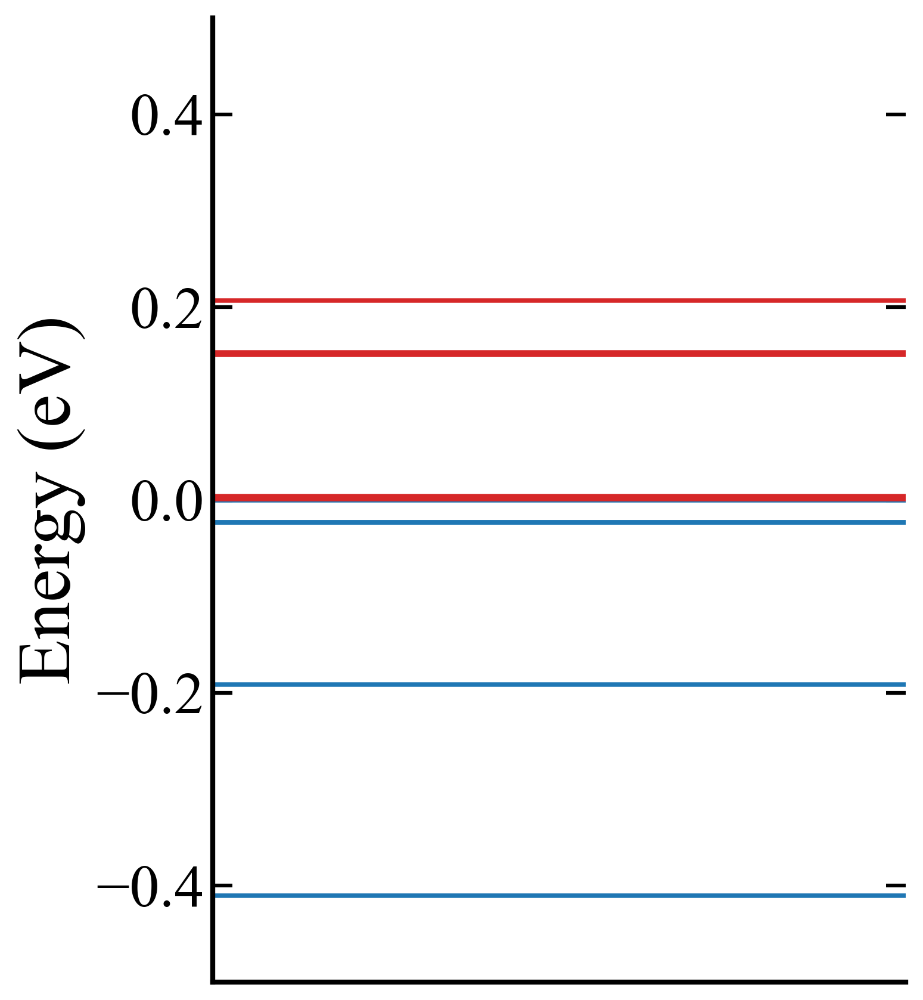
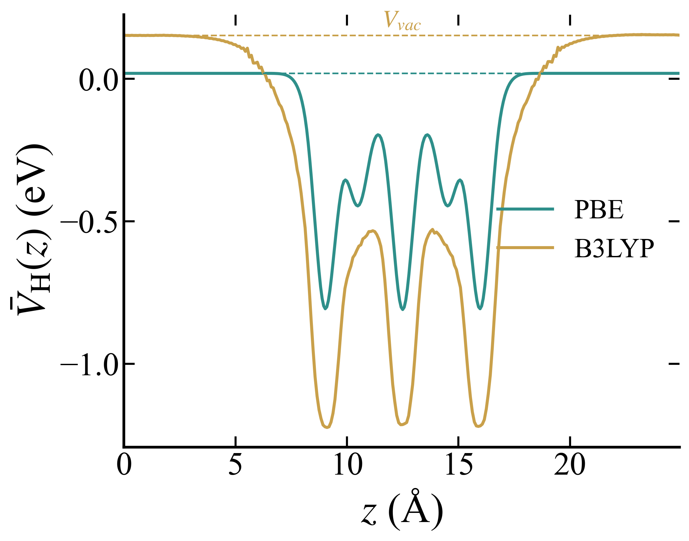
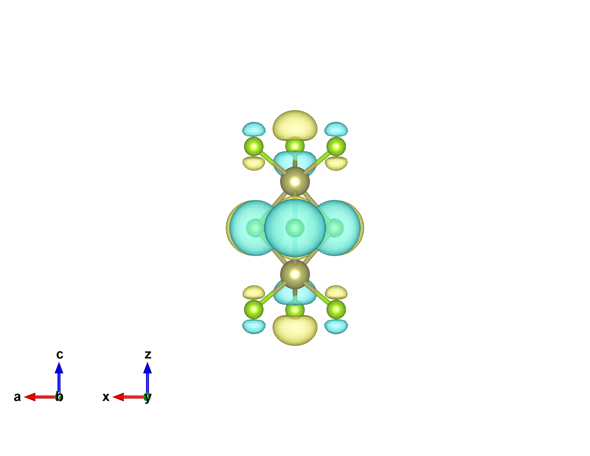
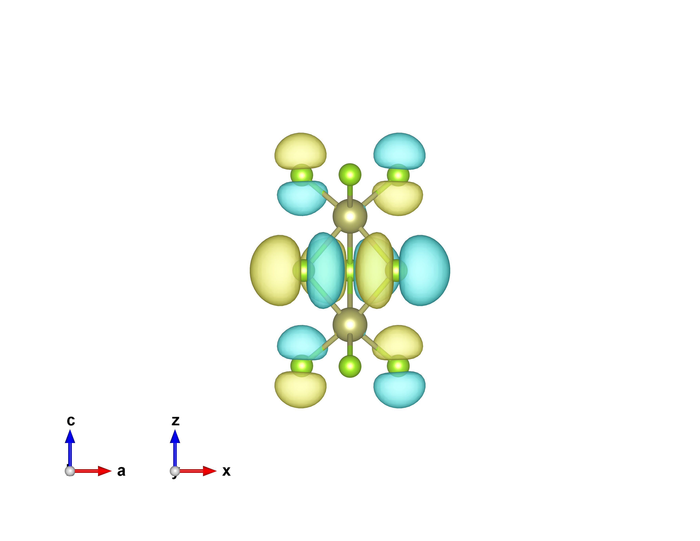

Hf₂Se₉ molecule — frontier levels at E_F
Goal
Characterise the Hf₂Se₉ molecule that bridges the two VSe₃ chains: its gap, the spatial character of the frontier orbitals, and how far DFT misplaces them.
Method
SIESTA, vdW-DF2 relaxation + single point; HOMO/LUMO wavefunctions plotted. A separate vacuum single point compares PBE vs the B3LYP hybrid, vacuum-level aligned.
Result
- Tiny gap: the molecular HOMO–LUMO gap is only ≈ 0.024 eV, so the frontier levels sit essentially on $E_F$ (Fig. 2).
- Delocalised frontier orbitals: both HOMO and LUMO spread over the whole Hf₂Se₉ unit (Fig. 4) — they can carry current end to end.
- Hybrid opens the gap: B3LYP widens it to 0.752 eV (vacuum-aligned shifts $\Delta_\text{HOMO}=-1.015$, $\Delta_\text{LUMO}=-0.286$ eV).


Interactive — the same relaxed Hf₂Se₉ (drag to rotate, scroll to zoom):

| State | $E-E_F$ (eV) |
|---|---|
| LUMO+2 | +0.0075 |
| LUMO+1 | +0.0040 |
| LUMO | +0.0033 |
| HOMO | −0.0201 |
| HOMO−1 | −0.0202 |
| HOMO−2 | −0.1883 |
Gap = $E_\text{LUMO}-E_\text{HOMO}$ = 0.024 eV (vdW-DF2). (Source: 2026-06-12 meeting.)
Vacuum-level alignment (B3LYP correction input)
To place the molecular levels on an absolute scale, the orbital energies are referenced to the vacuum level $V_\text{vac}$ taken from the planar-averaged Hartree potential in the vacuum region (Fig. 3). Aligned this way, the hybrid B3LYP opens the gap from 0.023 → 0.752 eV and lowers the HOMO by ~1 eV relative to the LUMO — the input to the DFT+Σ level correction.

| Method | $V_\text{vac}$ (eV) | HOMO − $V_\text{vac}$ (eV) | LUMO − $V_\text{vac}$ (eV) | gap (eV) |
|---|---|---|---|---|
| vdW-DF2 (SIESTA) | 0.020 | −5.577 | −5.554 | 0.023 |
| B3LYP (VASP) | 0.153 | −6.592 | −5.840 | 0.752 |


Discussion
Because PBE/vdW-DF underestimates the gap, the molecular resonance lands on $E_F$ and the junction transmits "too well." Correcting the level alignment (B3LYP via a DFT+Σ shift) is what decides whether the headline picture is resonant or non-resonant — the computed shifts and the scattering-region length convergence are on the level correction page.